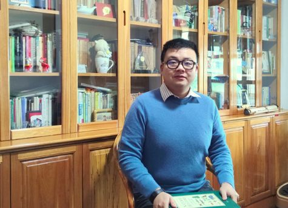
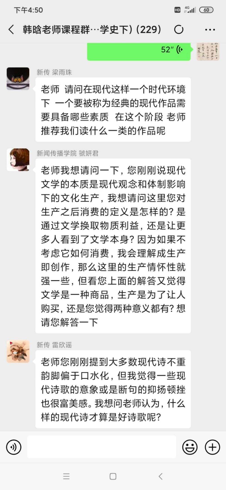

疫情中的武汉诗人③：先把所有的问题、抱怨和不解都放在一边
原文链接 备份链接 澎湃新闻记者 范佳来 2020-02-05 11:47 来源：澎湃新闻 字号 “慌乱。” 这是武汉诗人张执浩经常提到的一个词。“看到外界的信息蜂拥而至，生命的无力感特别强烈。” 1月23日10时起,武汉城市公交、地铁、 …
人类历史上每一场大的疫情，对于文化的影响都非常巨大。我们应当通过这场国难，思考中国文化未来发展可能遇到的困境，努力将其转变为发展机遇。
口述 | 韩 晗
整理 | 孔冰欣

韩晗，武汉大学国家文化发展研究院副教授、中国作家协会会员。目前从事国家形象传播、文化产业与社会意识形态等问题的研究。至今已在中国大陆、中国台湾与德国出版中英文专著19种。图为疫情期间在家读书。
呼吁大家重视传统文化，保卫母语尊严
关于“风月同天”和“武汉加油”孰优孰劣？我并非强调二者的可比性，只是希望以此为切入点，呼吁大家重视传统文化，保卫母语尊严。
起因是我的好友盛静教授负责学术公众号“语言与安全”——其内容并不特别面向大众，是比较纯学术的，她邀请我撰稿，我答应了。那天晚上我正好有空，差不多花了一个小时的时间，最后成文《为什么别人会写“风月同天”，而你只会喊“武汉加油”？》，给盛静拿去用了。
坦白讲，我们从未想把这篇文章推成一个“爆款”，毕竟我的这篇文章也比较学术。发表之后，舆情远非我们所能控制，从破十万到破百万只用了24个小时，整个过程一开始让我们很惊讶。旋即引发了社会各界的关注，包括六神磊磊、胡锡进等大V又开始跟进，讨论这个现象。
韩晗原文首发在公号“语言与安全”上
我的文章实际上是探讨修辞问题，这是非常学术的范畴。后来听说，文章“走红”之后，一些海外媒体也介入讨论此事，个别评论措辞可能有些偏激，这些我都没有关注。用罗兰·巴特的话讲，文章一旦写成，就是“作者已死”，人家怎么写读后感，作者没有资格干预。后来有一家地方媒体的官微发了一篇影响更大的评论，可能并非针对我那篇文章。但我看了之后，唯一的感觉就是这篇评论在写作上有很多不足之处，起码修辞就有问题。后来CGTN记者杨学敏女士采访我，CGTN刊发了英文采访稿，我仍谈的是修辞问题，目的是立足传统文化，保卫汉语，这是我写这篇文章的初心。
关于这个问题，我的立场是：“武汉加油”当然没问题，但我们不能只会说“武汉加油”，好的修辞是多元化的，这需要我们面向传统，培养汉语的语感与审美能力。
因为疫情，取消了赴日旅行
我的父亲是在武汉出生长大的，我在黄石出生长大的，两座城市相隔七十公里，日常生活有很多交集。我念大学本科时在成都的西南民族大学，硕士在中国传媒大学，博士在武汉大学，博士毕业后，我在北京的中国科学院工作了两年，因为工作需要，又在美国住了将近一年，之后又去了深圳大学，工作了三年，十几年折腾了四五个城市和两个国家。

韩晗在伊斯坦布尔国家博物馆
如今，我“转会”母校武汉大学，也是响应了当时武汉市委书记陈一新同志提出“资智回汉”的倡议。不过，谁也没有想到，第一个学期刚刚结束，第二个学期尚未启程，大家就碰上了新冠肺炎疫情这么大的事件。
这场疫情之前，我和妻子有年后赴日旅行的计划，初步计划是去京都、大阪和奈良，因为这些地方既有学界的朋友，也准备京都的书店去买一些旧书，目前我们的护照还在日本驻华大使馆。我们是原本计划回来过年的，过完年我们就从武汉飞大阪。疫情发生后，封城始料不及，如今我们一家人都“困”在黄石，日常生活虽有不便，但没有什么现实大问题。
唯一觉得不太习惯的就是无法出门散步或慢跑了。我有日行万步的习惯，这个习惯已经坚持了十几年，以前在全国各地工作时，都有慢跑的习惯，像深大校园的绿道、清华校园内，都是我经常跑步、散步的地方，眼下却陷入了无路可走的局面，你说人在家里，能走到5000步就非常了不起了；真走到10000步，一定是“微信运动”的前三名，完全有可能被人误认为是“非法活动人群”，起了举报之心都有可能。
好在吃饭问题在我家不是问题，食物供应充足，父母和我们在一起，我父亲去年底正好退休，他厨艺甚佳，目前是他在家里做大厨，所以吃饭问题上我很幸运，不会存在吃十多天泡面这种遭遇。至于精神生活方面，我和妻子都是大学老师，平常除了散步也是“宅日常”，现在也无非还是看书、看电影、写东西，然后给学生上网课。

韩晗和妻子张萱于疫情期间唯一一次外出购买食材
我任教的武汉大学，因地处疫情的中心区域，开学时间肯定要延后，且延后的时间或相对较长。而我看到，身边不少高校教师朋友，纷纷在朋友圈吐槽“网课”的不合理性，我与几位朋友闲聊之后，了解了大致情况。
我身边很多同行，过年要回老家，有些朋友在武汉安家十几年了，回一趟老家等于度假，考虑也就一周左右的时间，而且又是赶春运。所以当时很多人离开武汉时，都是仓促离开，包括我在内。谁也没想到年前会下一个漫长的“封城令”，所以很多同行返家过年时，笔记本电脑、移动硬盘、教案与资料等等，都没有带齐，现在要上网课，这对于大家来说，当然是一个不小的挑战，有些有孩子的同行，连孩子的练习册、课本也没带，只想带孩子回老家放松几天，现在小学生也要上网课，这下就穷于应付了。
这方面，其实武汉大学考虑比较周到，不强制要求你用哪个网课平台，微信群也行。但有些学校，尤其是中小学，听说一定要求某某平台，而有些平台对网络环境要求很高，一些乡村、偏远地区根本没有高速光纤或是4G覆盖，这对于很多老师、学生来说，确实是一个很大的现实问题。
正在思考疫情对未来中国文化的影响
2月17日下午，我在微信上“开讲”了新学期的第一课，主要给武汉大学新闻传播学院的学生们讲中国现代文学，方式是微信语音，然后在群里与同学分享电子书。
目前我在武汉大学国家文化发展研究院工作，给武汉大学新闻传播学院的本科生授课。之所以请我来讲“中国文学（下）”，很重要一个原因是我的博士学位是中国现当代文学专业的，2007年我就加入了中国作家协会，目前我的研究是中国现代文化产业史，这与中国现代文学关系密切。
我认为，新闻专业的学生，作为人格奠基的文学教育非常重要，中国现代文学史与中国新闻史的关系也非常密切。因此我想借此机会谈谈新闻与文学的关系，谈谈怎么理解中国现代文学与时代的联系，当然更想和大家一起谈谈，新闻人如何靠良知与“笔杆子”立身。
这堂课之后，我觉得武汉大学新闻传播学院同学们的素质非常高，我预留了交流时间，大家都是大一的学生，提的问题却很专业，有些同学加了我的微信，追问了许多问题，我觉得线上授课的效果可能不一定比线下效果差。

韩晗在微信上授课
因为工作需要与个人学术兴趣，最近我一直在思考这场疫情对未来中国文化的影响。我有一个基本判断，这场疫情或将影响未来中国文化的发展走向。疫情是一面镜子，照出了我们这个社会里许多闪光或丑恶的东西。一些问题看似是简单的伦理、道德或是法律问题，但却在根本上事关未来中国文化的走向，既包括修辞、舆情等微观问题，也包括国民性问题、国家文化形象传播与民族文化认同等宏大问题，这些问题有些迫在眉睫，但有些是需要从长计议的。
因为我本人处于疫情的中央，又从事文化研究，所以我对疫情的感触尤其深刻。人类历史上每一场大的疫情，对于文化的影响都非常巨大。这在历史上都不鲜见，无论是十四世纪的英国黑死病，还是1910年代的世界大流感，这些公共卫生事件都深刻地改变了人类文化的发展方向，当然不能简单说它对文化的影响是好还是坏，文化不是经济更不是股票，其发展不能用简单的涨跌来衡量。作为研究者与写作者，我们应当通过这场灾难，思考中国文化未来发展可能遇到的困境，努力将其转变为发展机遇，并作出自己的判断与建议，这是我们时刻应去想、去做的事情。

征集令
《新民周刊》现面向全国征集新冠肺炎采访对象和真实故事：
如果你是参与抗击新冠肺炎疫情的医护人员或其家属，我们希望聆听你的“战疫”故事，也希望传达你的诉求。
如果你是确诊、疑似患者本人或家属，我们希望了解你和家人如何“抗疫”的过程，让外界了解你的真实经历。
如果你是疫情严重地区的普通市民，我们希望展现你的乐观，并倾听你所需的帮助。
如果你是公共服务人员或各类捐助者，我们希望看到你的“最美逆行”，记录下你的无私。
……
抗击新冠肺炎疫情，我们诚征对疫情了解的社会各界人士，提供相关线索，说出你的故事，让我们用新闻留存这一切。
《新民周刊》新冠肺炎线索征集值班编辑联系方式（添加时请简要自我介绍）：
周一：应 琛 微信号：paulineying0127
周二：金 姬 微信号：gepetta
周三：黄 祺 微信号：shewen-2020
周四：周 洁 微信号：asyouasyou
周五：孔冰欣 微信号：kbx875055141
周六：吴 雪 微信号：shyshine1105
周日：姜浩峰 微信号：jianggeladandong
✳如你需要捐赠物资，可与以下两位工作人员联系:王勇：WangYong-SH 吴轶君：rommy150708（添加时请注明“捐物资”，方便工作人员快速通过您的申请，谢谢。）
新闻是历史的底稿，你们是历史的见证者。期待你的故事、你的线索！

▼
大家还都在看这些
▼
新民周刊所有平台稿件，
未经正式授权，
一律不得转载、出版、改编，
或进行与新民周刊版权相关的其他行为，
违者必究。


原文链接 备份链接 澎湃新闻记者 范佳来 2020-02-05 11:47 来源：澎湃新闻 字号 “慌乱。” 这是武汉诗人张执浩经常提到的一个词。“看到外界的信息蜂拥而至，生命的无力感特别强烈。” 1月23日10时起,武汉城市公交、地铁、 …
原文链接 备份链接 世界卫生组织（WHO）总干事谭德塞在2020年1月30日宣布：新冠疫情的全球性暴发，已构成“国际关注的突发公共卫生事件”（PHEIC）。 谭德塞同时强调，这一宣布是基于新冠疫情在中国以外的发展情况，而非针对中国国内 …
原文链接 备份链接 数据来源：腾讯新冠肺炎疫情实时追踪 截至2月1日上午6时，海外国家疫情情况 截至2月1日上午6时， 全国新型肺炎确诊病例超过11180例， 海外国家共确诊124例。 北京时间1月31日，世界卫生组织WHO宣布 将此次 …
原文链接 备份链接 关注并星标消费新声 不错过泛消费任何最新动态 尤其在近十年，尽管国际形势时有起落，但两国的经济和民间交流正在不可逆地粘连到一起，相似的传统文化背景让我们之间形成对照，成为几乎不可能被斩断的近邻。 作者 | …
原文链接 备份链接 自新型冠状病毒爆发以来，很多从武汉返乡的工作者、大学生接到了当地社区的电话，或者填写了关于个人信息的调查表。疫情当前，这一切都是为了“配合疫情防控、对抗病毒传播”。可是事情的发展渐渐走了样。大年初二一早，#武汉返乡人员 …